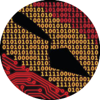

Bern CoDA Lab
Courses, eBooks, Software, and Publications

Statistical Methods for Archaeological Data Analysis (SMADA)
Course Website
Lectures pdfs, lecture video recordings, course handouts and exercises.
Lectures pdfs, lecture video recordings, course handouts and exercises.
GIS in Archaeology (GIA)
Course Website
Using QGIS for archeological investigations.
Using QGIS for archeological investigations.
Software available on GitHub
Yet to come
Our publications related to multivariate time-series analysis
This is a selection of papers involving the Bern CoDA Lab. See our individual websites for our publications on other topics.
- Fill me